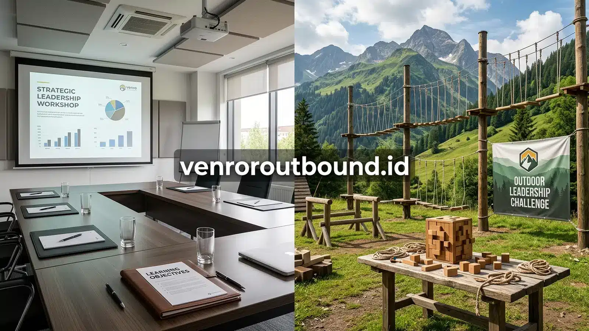

1. Mengapa Pengukuran Efektivitas Outbound Krusial Bagi Manajemen HR?
Jawaban Singkat: Mengukur efektivitas outbound terhadap engagement karyawan dapat dilakukan melalui survei kepuasan pasca-acara, observasi dinamika komunikasi tim, serta pemantauan indikator organisasi seperti engagement survey atau turnover dalam periode tertentu. Hasil evaluasi sebaiknya dibandingkan dengan kondisi sebelum program agar HR dapat melihat perubahan secara lebih objektif. Outbound berperan sebagai intervensi pengalaman sosial, bukan solusi instan tunggal bagi retensi karyawan.
Setiap tahun, anggaran pengembangan sumber daya manusia dialokasikan untuk kegiatan luar ruang seperti gathering dan team building. Namun, pertanyaan klasik yang kerap dilontarkan dewan direksi maupun Chief Financial Officer (CFO) kepada tim HR adalah: \"Apa dampak nyata dari kegiatan ini bagi iklim kerja dan kinerja tim?\" Jika HR hanya menjawab dengan kumpulan foto ceria di media sosial, kredibilitas program pengembangan karyawan akan rentan dipertanyakan.
Program outbound team building sejatinya bukan sekadar rekreasi liburan tahunan. Kegiatan ini merupakan intervensi psikososial terstruktur yang dirancang untuk membuka ruang dialog, mencairkan relasi interpersonal yang kaku, serta memperkuat rasa memiliki terhadap tim. Oleh karena itu, pendekatan evaluasi yang komprehensif sangat diperlukan agar investasi waktu dan biaya yang dikeluarkan dapat dipertanggungjawabkan secara profesional.
Untuk memperoleh gambaran yang adil, manajemen perlu membedakan antara indikator langsung yang dapat diobservasi segera saat kegiatan berlangsung, dengan indikator organisasi jangka menengah dan panjang yang dipengaruhi oleh banyak variabel makro perusahaan.

Strategi Meruntuhkan Silo Mental Antar Divisi Perusahaan Lewat Experiential Games
Pelajari cara mendesain simulasi paralel untuk mengatasi hambatan sekat komunikasi antar departemen.
2. Kerangka Kerja Tiga Tahap: Evaluasi Before, During, dan After Program
Pengukuran efektivitas yang kredibel tidak dimulai saat peserta menaiki bus pariwisata, melainkan sejak tahap perencanaan awal. Model evaluasi yang dianjurkan membagi proses menjadi tiga garis waktu yang berurutan:
Fase 1: BEFORE (Penyusunan Baseline & Sasaran Perilaku)
Pada fase pra-kegiatan, HR mengidentifikasi isu spesifik yang ingin diperbaiki. Apakah ada friksi antara tim penjualan dan logistik? Apakah manajer baru kesulitan membangun keterbukaan dengan staf senior? Data baseline dapat dikumpulkan melalui survei internal singkat, wawancara perwakilan manajer lini, atau rekam jejak kepuasan kerja sebelumnya.
Output Fase Before: Rumusan sasaran perilaku yang spesifik (misal: meningkatkan inisiatif komunikasi horizontal dan menurunkan kecenderungan defensif saat koordinasi proyek).
Fase 2: DURING (Observasi Lapangan & Dinamika Simulasi)
Saat kegiatan berlangsung di alam terbuka, tim fasilitator dan perwakilan HR yang bertindak sebagai observer mencatat dinamika interaksi alami. Peserta diamati dalam hal bagaimana mereka mendengarkan pendapat rekan kerja di bawah tekanan waktu, siapa yang mengambil inisiatif kepemimpinan saat terjadi kebuntuan, serta bagaimana tim menyikapi kegagalan misi simulasi.
Output Fase During: Lembar catatan observasi dinamika kelompok dan respon reflektif peserta pada sesi debrief.
Fase 3: AFTER (Survei Reaksi, Komitmen Aksi, dan Monitoring)
Pasca-acara, HR mendistribusikan survei kepuasan peserta (CSAT) untuk mengukur aspek operasional dan persepsi kemanfaatan kegiatan. Lebih dari itu, HR memantau eksekusi action commitment yang disepakati saat penutupan outbound dan mengukur konsistensi perbaikan komunikasi dalam rentang waktu 30 hingga 90 hari ke depan.
Output Fase After: Laporan pertanggungjawaban (LPJ) terpadu yang memuat analisis kepuasan, rangkuman observasi, dan rencana pemantauan keberlanjutan.
3. Parameter Pengamatan Kualitatif: Membaca Perilaku Alami Peserta
Berbeda dengan ujian tertulis, keaslian karakter dan pola relasi karyawan sering kali terlihat paling jujur saat mereka berada di luar zona nyaman kantor. Ketika dihadapkan pada permainan yang menuntut koordinasi fisik dan strategi pemikiran di bawah terik matahari atau udara sejuk pegunungan, mekanisme pertahanan diri formal perlahan mencair.
Beberapa aspek pengamatan kualitatif yang penting dicermati oleh fasilitator dan HR meliputi:
- Pola Komunikasi dan Aliran Ide: Apakah dominasi hanya dipegang oleh satu atau dua individu yang vokal, ataukah seluruh anggota kelompok diberi ruang yang setara untuk menyumbangkan ide pemecahan masalah?
- Kepemimpinan Informal (Emergent Leadership): Siapa individu yang secara spontan mampu merangkul anggota lain yang kebingungan, menenangkan ketegangan, dan membagi tugas secara adil saat kelompok menghadapi kebuntuan?
- Ketahanan Mental (Resilience): Bagaimana reaksi emosional kelompok saat mereka melakukan kesalahan yang menyebabkan penalti dalam simulasi? Apakah mereka saling menyalahkan atau segera bangkit mengatur ulang taktik?
- Kolaborasi Lintas Batas: Ketika digabungkan dalam satu kelompok campuran antar departemen, seberapa cepat mereka mampu mengatasi kecanggungan dan menemukan keselarasan ritme kerja?

4. Tabel Matriks Indikator Kualitatif Observasi Lapangan
Berikut adalah contoh matriks pengamatan kualitatif yang dapat diadaptasi oleh tim HR untuk memantau dinamika kelompok selama proses simulasi berlangsung:
| Indikator Pengamatan | Aspek Perilaku yang Diamati di Lapangan | Relevansi dengan Rutinitas Kantor |
|---|---|---|
| Komunikasi Efektif | Kejelasan menyampaikan instruksi, kemampuan mendengarkan aktif tanpa memotong pembicaraan. | Mengurangi miskomunikasi instruksi kerja dan mempercepat konfirmasi proyek antar departemen. |
| Kolaborasi Tim | Kerelaan saling membantu, berbagi beban tugas fisik dan strategi tanpa merasa lebih unggul. | Menumbuhkan semangat tolong-menolong saat salah satu divisi menghadapi lonjakan beban kerja. |
| Partisipasi Aktif | Keterlibatan seluruh anggota, tidak ada yang pasif menyendiri atau memisahkan diri dari tim. | Meningkatkan rasa memiliki (sense of belonging) pada proyek bersama di lingkungan korporasi. |
| Pemecahan Masalah | Kemampuan merumuskan alternatif solusi secara tenang saat strategi awal menemui kegagalan. | Membangun ketangkasan berpikir (problem-solving agility) dalam menghadapi komplain pelanggan. |
| Kepemimpinan Informal | Inisiatif mengambil tanggung jawab koordinasi dan memberikan dorongan semangat moral tim. | Mengidentifikasi bibit potensi kepemimpinan masa depan (talent pipeline) bagi suksesi internal. |
| Adaptasi Perubahan | Kesiapan kelompok saat fasilitator secara mendadak mengubah peraturan di tengah simulasi. | Meningkatkan kesiapan tim beradaptasi terhadap perubahan kebijakan manajerial dan pasar. |
Diskusikan Format Evaluasi Program Outbound Anda
Diskusikan rancangan evaluasi kegiatan team building dan kebutuhan program organisasi Anda melalui WhatsApp bersama konsultan Vendor Outbound.
Diskusikan Evaluasi Outbound via WhatsApp5. Pengukuran Kuantitatif: Mengolah Data Survei Kepuasan dan Partisipasi
Selain catatan kualitatif, manajemen eksekutif sering kali membutuhkan angka terukur untuk merangkum hasil kegiatan. Beberapa instrumen kuantitatif yang lazim diterapkan meliputi:
- Net Promoter Score (eNPS) / Skor Kepuasan Acara (CSAT): Mengukur persentase peserta yang merekomendasikan program outbound tersebut kepada rekan kerja lainnya serta menilai kepuasan terhadap materi simulasi, kualitas fasilitator, akomodasi, dan konsumsi.
- Tingkat Kehadiran dan Partisipasi (Participation Rate): Menghitung rasio kehadiran aktual dibandingkan total undangan serta persentase keikutsertaan aktif dalam setiap pos simulasi tanpa izin meninggalkan sesi.
- Pre-test vs Post-test Refleksi: Menguji pemahaman peserta terhadap nilai-nilai inti perusahaan (corporate values) sebelum dan sesudah kegiatan outbound dilakukan.
Catatan Metodologi Pengukuran:
(Contoh Hipotetis untuk Simulasi Pengukuran): Sebuah perusahaan dengan 100 peserta mencatatkan skor kepuasan acara 4.6 dari skala 5.0, dengan 92% peserta menyatakan memahami pentingnya koordinasi lintas fungsi pada survei H+1. Angka ini merupakan indikator respon langsung terhadap penyelenggaraan acara, dan bukan merupakan jaminan otomatis bahwa produktivitas harian langsung melonjak tanpa pendampingan manajerial.

Layanan Outbound Profesional vs Kelola Mandiri: Analisis Risiko HR
Ketahui perbandingan risiko operasional, beban panitia internal, dan kualitas output kegiatan.
6. Menempatkan Retensi & Engagement Karyawan dalam Konteks Outbound
Salah satu kekeliruan yang kerap terjadi dalam evaluasi SDM adalah menarik kesimpulan sebab-akibat yang terlalu simplistis, misalnya mengklaim bahwa \"outbound pasti menurunkan angka turnover karyawan\". Sebagai praktisi profesional, penting untuk melihat retensi karyawan sebagai fenomena multifaktorial yang sangat kompleks.
Keputusan seorang talenta untuk bertahan atau mengundurkan diri dari perusahaan ditentukan oleh jalinan faktor yang luas, antara lain:
- Kesesuaian kompensasi dan tunjangan kompetitif dengan standar pasar industri.
- Gaya kepemimpinan dan kualitas hubungan kerja dengan atasan langsung (direct supervisor).
- Beban kerja harian, kejelasan target, dan keseimbangan hidup-kerja (work-life balance).
- Kejelasan jalur pengembangan karier dan peluang promosi di masa mendatang.
- Kondisi perekonomian makro serta keterbukaan kesempatan di pasar tenaga kerja luar.
Dalam lanskap tersebut, kegiatan outbound team building memegang peran strategis sebagai intervensi employee experience. Outbound menciptakan memori positif bersama, menurunkan ketegangan interpersonal, dan menumbuhkan rasa dihargai oleh institusi. Pengalaman sosial yang positif ini dapat memperkuat keterikatan emosional (emotional engagement), yang jika didukung oleh sistem manajemen yang sehat, akan berkontribusi positif terhadap ketahanan tim dalam jangka menengah.
7. Siklus Pemantauan Berkelanjutan: Dari Hari ke-0 Menuju Evaluasi Triwulanan
Agar hasil kegiatan tidak berhenti sebagai dokumen arsip semata, HR disarankan mengadopsi siklus pemantauan berkesinambungan dengan tahapan sebagai berikut:
- Hari ke-0 (Hari Pelaksanaan): Pelaksanaan kegiatan outbound, observasi perilaku oleh fasilitator, dan perumusan komitmen aksi kelompok pada sesi debrief penutup.
- Minggu ke-1 (Evaluasi Operasional): Pengisian survei kepuasan peserta (CSAT), kompilasi laporan fasilitator, serta penyebaran rangkuman wawasan kepada manajemen lini.
- Minggu ke-4 (Pengecekan Komitmen Awal): Pertemuan evaluasi singkat untuk mengecek apakah butir-butir komitmen kolaborasi lintas divisi telah mulai dipraktikkan dalam alur kerja rutin kantor.
- Bulan ke-3 / Triwulan (Integrasi Engagement): Meninjau kembali dinamika hubungan kerja bersamaan dengan survei keterikatan karyawan (pulse survey) atau tinjauan kinerja berkala tim.
Kerangka kerja bertahap ini memastikan bahwa momentum positif yang diperoleh selama kegiatan di luar ruangan dapat ditransformasikan secara bertahap menjadi kebiasaan kerja yang produktif.

Paket Outbound Corporate Synergy & Employee Engagement Perusahaan 2026
Panduan memilih skenario program intensif 1-Day atau 2-Day plus menginap sesuai kebutuhan instansi.
Kesimpulan: Menghadirkan Akuntabilitas Nyata pada Program SDM
Mengukur efektivitas kegiatan outbound adalah langkah esensial untuk membuktikan bahwa pengembangan budaya kerja bukanlah sekadar biaya pengeluaran, melainkan investasi strategis jangka panjang. Dengan menggabungkan kerangka kerja Before-During-After, observasi kualitatif yang teliti di lapangan, serta pemantauan tindak lanjut yang konsisten di kantor, manajemen HR dapat menyajikan laporan pertanggungjawaban yang berbasis fakta dan memperkuat rasa saling percaya di seluruh jajaran organisasi.
Pertanyaan Seputar Evaluasi & Pengukuran Outbound

Arby Ardiansyah
Arby Ardiansyah merupakan penulis konten Vendor Outbound yang berfokus pada topik outbound perusahaan, team building, leadership, employee engagement, dan experiential learning.